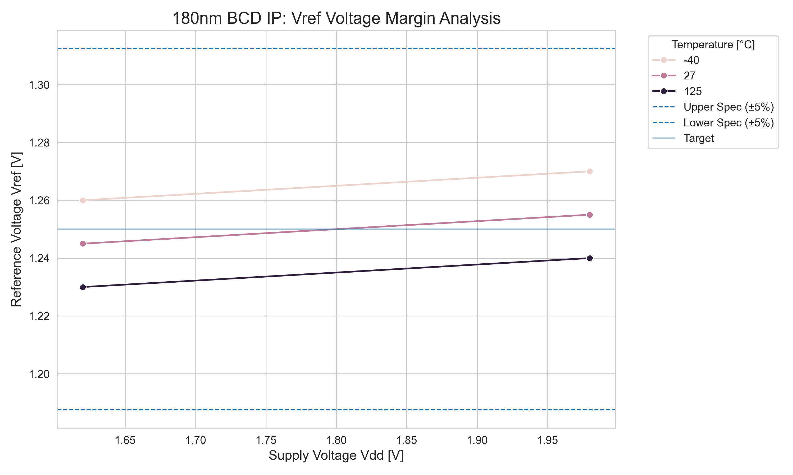
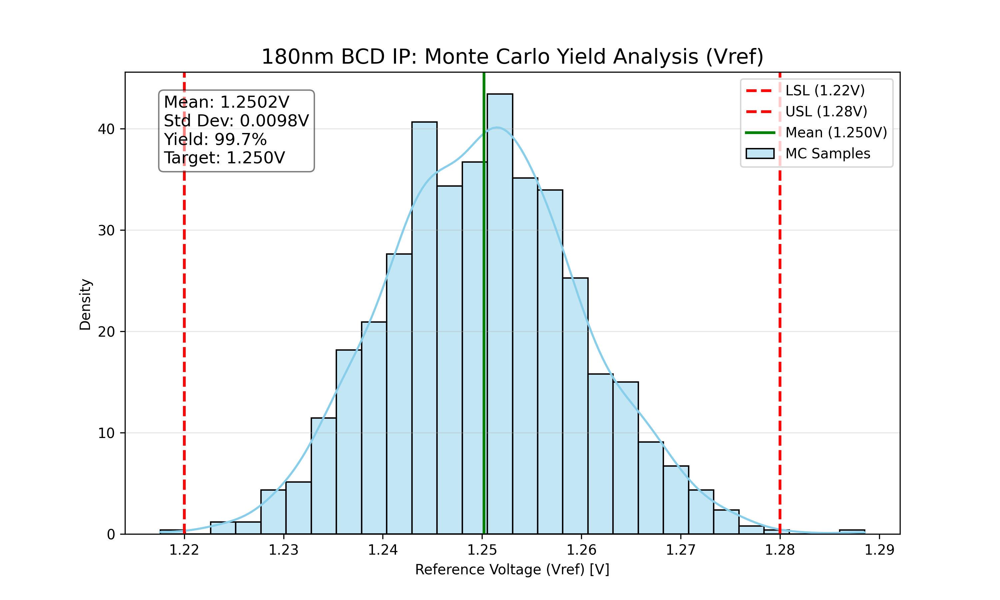

Generated Date: 2026-03-02 17:35:40 | Foundry: ams OSRAM 180nm BCD Platform
| Parameter | Symbol | Min | Typ | Max | Unit | Conditions |
|---|---|---|---|---|---|---|
| Supply Voltage | Vdd | 1.62 | 1.80 | 1.98 | V | Full Temp Range |
| Reference Voltage | Vref | 1.230 | 1.250 | 1.270 | V | -40 to 125°C |
| Supply Current | Idd | 90 | 110 | 135 | nA | Static |
| Line Regulation | LR | - | 2.5 | 5.0 | mV/V | Vdd=1.62~1.98V |

Fig 1. Corner Analysis (PVT)

Fig 2. Monte Carlo Yield Analysis
This IP block has been verified against 180nm BCD Safe Operating Area (SOA) rules. All devices operate within the voltage limits for the specified 1.8V nominal supply.